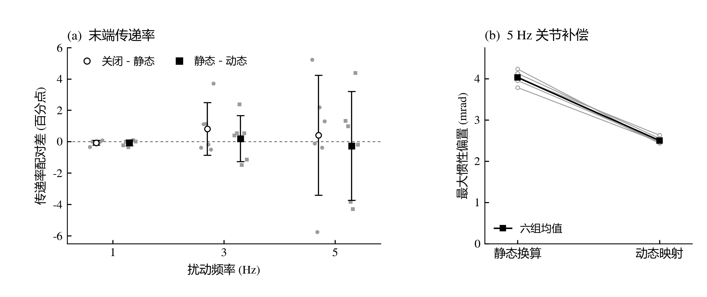

基于动力学前馈的 UR5e 末端抗扰控制
基座平移扰动下的 Gazebo 仿真试验
1 引言Introduction
龙门平移会带动机械臂基座，本文的控制目标是使末端保持在世界坐标系的给定位姿。控制器用位姿反馈纠正实际偏差，并用含末端负载的机械臂动力学模型估算补偿力矩。参考导纳控制中从力到运动的映射[1]，模型力矩经关节弹簧–阻尼关系转换为位置前馈。试验考察映射方式、基座状态更新率与反馈增益对末端抗扰的影响。
2 方法Methodology
外环由世界系位姿误差 e 及其限幅积分 Ie 形成 PID 反馈，并用基座运动形成运动学前馈。令 ve 为末端世界系速度在控制坐标系中的表示，vb→e 和 ab→e 为换算到末端的基座运动信号，则笛卡尔速度指令为
速度指令经逆运动学和积分得到关节参考位置 qref。关节层另算两部分力矩。G 是重力项，Cq̇ 是科氏与离心项，M 是关节空间惯量矩阵。ab 表示在基座坐标系中表达的基座线加速度，平移基座的等效重力为 g − ab。
式 (2) 的各项由 KDL 根据 URDF 中的连杆质量、惯量和末端负载计算。基座只平移且末端目标固定时，参考关节加速度由阻尼最小二乘逆 J#λ 求得，右侧的零向量对应末端角加速度。
将惯性力矩限幅为 τ̃in 后，用 Gazebo 关节 PD 的比例矩阵 Pj 和微分矩阵 Dj 求位置偏置 δq。式 (4) 的动态映射按控制周期以后向欧拉更新。静态组在惯量支路采用 δq = Pj−1τ̃in，关闭组令惯量偏置为零。
试验采用 Y 轴底座扰动，固定世界系目标与控制增益。首轮用 20 mm 峰值的正弦扰动，在 1、3、5 Hz 各做六组换序配对。在 50 Hz 底座状态更新率下比较惯量前馈关闭、静态换算和动态映射，再固定动态映射比较 50 与 200 Hz。扰动频率表示底座每秒往复的次数。末端传递率取末端与基座在该频率处的位移幅值比。
第二轮固定底座状态更新率为 200 Hz，在同一次启动中比较三种映射。除 3 Hz 和 5 Hz 单频复测外，叠加 0.5–8 Hz 内的 13 个正弦分量，合成指令位移的峰值为 20 mm[2]。六组使用不同相位组合，组内三种配置采用相同波形，遍历六种试次顺序。先按时间戳用最小二乘联合拟合各频率分量及线性漂移，再报告逐频传递率和整段去趋势位移的均方根（RMS）之比。
PID 调参固定 200 Hz 和动态惯性映射，只更改 Y 向比例与微分增益。先用两套 20 mm 多频波形筛选十组增益，再用独立相位的 20 mm 和 30 mm 波形各做六组配对验证。每次更换增益只重启外环 PID，重新下发同一个世界系目标。每段扰动前记录 2.5 s 的静止末端位置，用去趋势 RMS 检查抖动。
随后用同一组 20 mm 和 30 mm 多频波形复测两个问题。在 init 姿态和新 PID 下，仅通过是否送入解析加速度切换惯性前馈，两组均保留重力和科氏补偿。再在 SRDF 的取料起始姿态 1st_reco_start 固定动态惯性前馈，对照原 PID 和新 PID。两项复测均在 200 Hz 下按振幅各做六组换序配对。
3 结果Results
| 扰动频率 | 关闭／50 Hz | 静态／50 Hz | 动态／50 Hz | 动态／200 Hz |
|---|---|---|---|---|
| 1 Hz | 7.86 | 7.93 | 8.00 | 3.58 |
| 3 Hz | 34.09 | 33.28 | 33.08 | 15.75 |
| 5 Hz | 62.87 | 62.46 | 62.73 | 33.07 |
动态映射相对静态换算的三个末端传递率差值区间均跨零（图 1a）。在 5 Hz 下，六组试次的关节补偿峰值均值从 4.03 降至 2.50 mrad（图 1b）。

基座状态从 50 Hz 提至 200 Hz 后，3 Hz 和 5 Hz 的传递率分别下降 17.33 和 29.67 个百分点（图 2）。独立启动复测中，这两个频点也观察到下降。

| 扰动工况 | 关闭 (%) | 静态 (%) | 动态 (%) | 关闭 − 动态（百分点） |
|---|---|---|---|---|
| 3 Hz 单频 | 16.25 | 16.07 | 16.57 | −0.33 [−1.57, 0.92] |
| 5 Hz 单频 | 30.48 | 33.52 | 31.00 | −0.52 [−3.45, 2.41] |
| 多频（RMS 比值） | 16.23 | 16.44 | 15.91 | 0.32 [−0.90, 1.53] |
200 Hz 下，动态映射相对关闭的单频差值和多频 RMS 差值的 95% 配对区间均跨零（表 2）。多频时末端 RMS 由 1.18 mm 变为 1.16 mm，动态映射相对静态换算的传递率改善为 0.54 [−0.39, 1.47] 个百分点。5 Hz 单频下，六组记录的关节补偿峰值均下降，均值从 4.34 降至 2.65 mrad。

| 指令峰值 | 末端 RMS (mm) | RMS 传递率 (%) | 最差频点传递率 (%) |
|---|---|---|---|
| 20 mm | 1.24 → 0.85 | 14.93 → 10.17 | 46.52 → 36.60 |
| 30 mm | 1.86 → 1.28 | 14.82 → 10.15 | 46.01 → 36.24 |
筛选后采用的 Y 向增益为 Kp = 12.0、Kd = 0.35，原值为 7.7 和 0.10。两种振幅下的 13 个频率成分的平均传递率均下降。20 mm 与 30 mm 的配对 RMS 传递率分别改善 4.76 [2.99, 6.53] 和 4.66 [2.93, 6.39] 个百分点，区间为 95%（图 4）。两组静止抖动均低于 0.00002 mm RMS，复测中的关节限速告警和惯量力矩钳位计数均为零。

在 init 姿态采用新 PID 后，开启动态惯性前馈使 20 mm 工况的末端 RMS 由 0.82 降至 0.76 mm，RMS 传递率改善 0.70 [0.33, 1.06] 个百分点。30 mm 的平均传递率改善 0.55 [−1.37, 2.48] 个百分点，其中一组开启后变差。
取料起始姿态复现了 PID 调参收益。20 mm 与 30 mm 工况的末端 RMS 分别由 1.32 降至 0.86 mm、由 2.00 降至 1.36 mm，RMS 传递率的配对改善分别为 5.51 [3.64, 7.38] 和 5.06 [3.51, 6.61] 个百分点。静止 RMS 由 0.233 升至 0.257 µm。两项追加复测均未记录关节限速告警或惯量力矩钳位。

4 讨论Discussion
世界系反馈负责纠正位姿误差，动力学模型在关节层提供前馈补偿。导纳式动态映射能降低关节补偿峰值。原 PID 下的 200 Hz 试验尚未分辨出惯性前馈的额外抗扰收益。新 PID 下，20 mm 对照显示惯性支路可进一步降低末端误差。加快底座状态更新也带来了可重复的收益，该信号同时进入位姿反馈和运动学前馈。
在动力学前馈保持固定时，Y 向反馈调参在两种姿态下都将末端 RMS 降低约三成。惯性前馈在 init 姿态的 20 mm 工况下带来可测的额外收益，30 mm 工况仍有较大不确定性。结果适用于 Gazebo 中受 Y 向平移扰动的世界系定点任务。固定振幅时，所需的补偿加速度随频率平方增长，关节限速会约束高频、大振幅工况。
常用的 with_moveit_new.launch 现默认采用 200 Hz。50 Hz 与 200 Hz 均在该入口通过了无界面的 MoveIt → PID → MoveIt 验证。20 mm 单频启动检查中，3 Hz 末端传递率由 21.08% 降至 11.36%，5 Hz 由 46.62% 降至 20.40%，实时因子均接近 1。省略采样率参数的复测也实际测到 200 Hz，并完成了同样的控制交接。
30 mm 复测中，8 Hz 的实测基座加速度幅值比指令高约 15%，相位滞后 11.8°–12.7°。开启前馈后变差的第六组也在这个范围内。因此存在可测的高频输入偏差，目前证据无法将该组末端误差上升归因于这一偏差。
该偏差与行程（20 或 30 mm）和前馈开关无关，属龙门速度环的线性响应，可用一组固有频率与阻尼比（20.61 Hz、0.25）在全频带内拟合至 0.4% 与 0.4° 以内。扰动节点现将指令加速度经该模型后再发布，速度指令不变，故扰动本身与以上测量保持可比。按八个频点与基座实际运动对照，发布值的偏差在 8 Hz 为 1.3% 与 2.1°，5 Hz 及以下为 0.5% 与 1.6°，而同一次运行中未校正为 11.7% 与 14.3°。标定与验证两次运行测得的响应相差约 2 个百分点与 1.8°，所以单一常数模型只能对齐到百分之一的量级。
补充试验数据与复测设置
提频的配对改善量在 1、3、5 Hz 分别为 4.42 [3.64, 5.20]、17.33 [15.09, 19.57]、29.67 [24.42, 34.91] 个百分点，方括号是 95% 区间。主试验全程基座净移动约 56 mm。近零净位移的独立复测中，3 Hz 为 33.1% → 16.3%，5 Hz 为 62.6% → 29.3%，基座净移动 1.23 mm。
10 mm 的单次摸底覆盖 0.5、2、4、6、8 Hz，其中 8 Hz 提频前后的传递率为 94.54% 和 45.17%。30 mm、5 Hz 下分别为 60.18% 和 32.73%。
逐段记录位于 VM 的 /tmp/ur5e-mapping-rate.kzPBo9/trials.csv。复测时用 base_pose_update_rate:=200.0 调整基座频率，用 inertia_mapping_experiment:=true 启用映射切换。较早试验见仓库记录和惯量前馈配对图。

200 Hz 映射对照的逐段统计和逐频拟合结果保存在仓库内，原始话题位于 VM 的 /tmp/ur5e-inertia-200hz.xm0npn/results。复试映射对照时，用 UR5E_BENCH_PID_PARAMS 指定调参前的 YAML（Y 向增益 7.7 和 0.10），再执行 bash run.sh 新输出目录。绘图用 python3 analyze.py 数据目录 图像路径。
200 Hz 试验中，开启组在拟合窗口内的惯量前馈有效比例为 99.6% 至 100%，力矩钳位计数为零。5 Hz 单频的两段记录了关节限速告警，其中一段告警出现在拟合窗口内。全试验基座净移动 6.60 mm。
PID 调参的逐段统计和逐频结果包含筛选与独立验证。bash run.sh 新输出目录 --tune 可复试，绘图用 python3 analyze_pid.py 数据目录 图像路径。原始话题位于 VM 的 /tmp/ur5e-pid-tuning.ptyNtZ/tuning。
默认 50 Hz 采样率下，20 mm 多频扰动另做了四组配对复测。RMS 传递率由 31.42% 降至 24.81%，配对改善 6.61 [2.95, 10.27] 个百分点。最差频点的配对改善区间为 −5.55 至 25.83 个百分点。50 Hz 试次及逐频结果使用 UR5E_BENCH_BASE_RATE=50.0 bash run.sh 新输出目录 --validate-gains 12.0 0.35 复试。
新 PID 下惯性前馈开关的逐段统计与逐频结果可用 bash run.sh 新输出目录 --compare-tuned-inertia 复试。取料起始姿态的逐段统计与逐频结果可用 bash run.sh 新输出目录 --pose 1st_reco_start --validate-gains 12.0 0.35 --full-validation 复试。绘图用 python3 analyze_followup.py 数据目录 图像路径。原始话题位于 VM 的 /tmp/ur5e-pid-inertia-followup.bpkZvB。
加速度对照用同一拟合窗口内的基座速度相量乘以 jω，再与按原始种子重建的解析指令加速度比较。对 30 mm 开启组的 8 Hz 分量，用位移相量乘以 −ω2 交叉复算，两种估计的幅值相差不超过 0.12%，相位相差不超过 1.66°。逐频数据可用 python3 check_base_acceleration.py 原始base.csv 数据目录 输出.csv 复算。
基座响应校正的验证数据可用 bash run_verify.sh 新输出目录 复测，该脚本在每个频点上将发布的加速度与基座速度相量乘 jω 对比，并以 _base_response_frequency:=0 的未校正运行作为对照。模型由 base-acceleration-comparison.csv 的 312 行数据拟合，涵盖两种行程与开关两种状态。
常用启动可用 bash run_standard.sh 新输出目录 200 复验。交还 MoveIt 后等待实测关节稳定，再从实际姿态规划至 1st_reco_start。启动检查记录含显式 50 Hz、显式 200 Hz 和默认 200 Hz 三次运行。